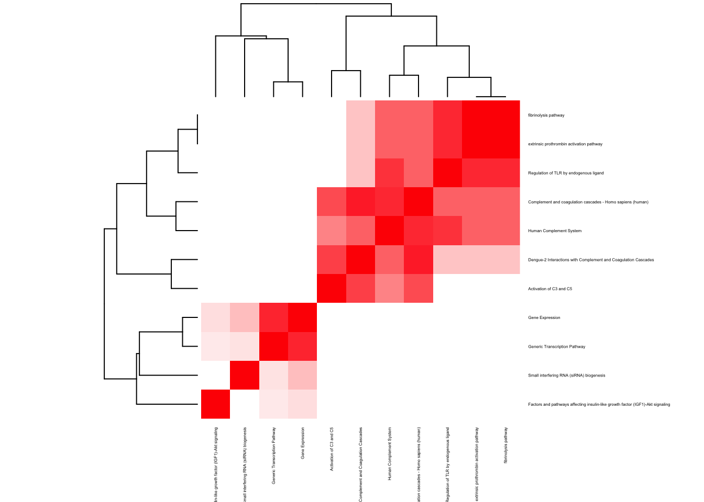
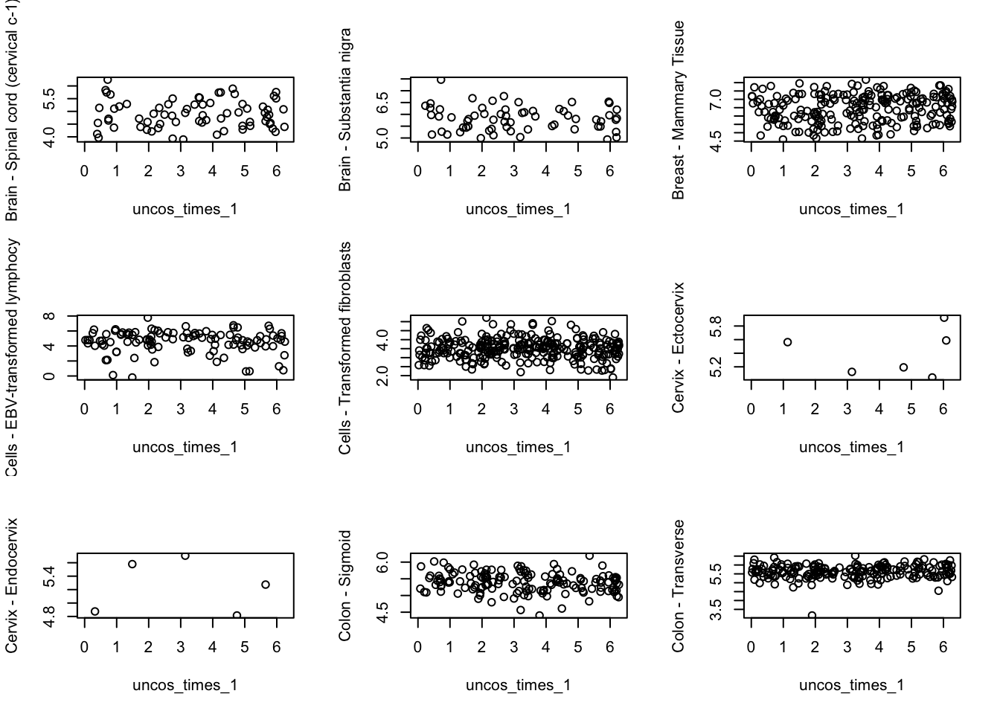
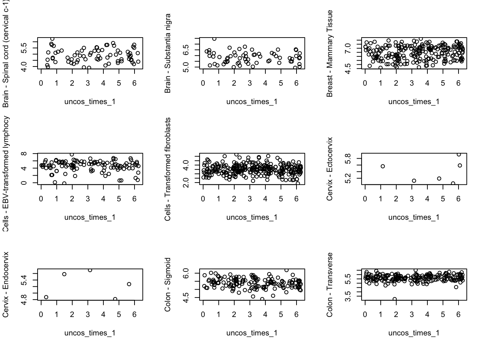

Liver specific genes
liver_specific <- apply(mash_dat$result$lfsr, 1, function(x) {
if(x[35] < 0.05 && min(x[-35])> 0.9){
return(1)
}else{
return(0)
}
})length(which(liver_specific==1))## [1] 589lfdr_diff <- apply(mash_dat$result$lfdr, 1, function(x) {
y <- median(x[-grep("Liver", U)]) - median(x[grep("Liver", U)])
return(y)
})names <- gene_names_1[order(lfdr_diff, decreasing = TRUE)[1:50]]
names[1:10]## [1] "ENSG00000158321" "ENSG00000173786" "ENSG00000269893"
## [4] "ENSG00000186017" "ENSG00000108179" "ENSG00000232573"
## [7] "ENSG00000103148" "ENSG00000272777" "ENSG00000066583"
## [10] "ENSG00000156017"out <- mygene::queryMany(names, scopes="ensembl.gene", fields=c("name", "summary"), species="human");## Finished
## Pass returnall=TRUE to return lists of duplicate or missing query terms.cbind.data.frame(out$name, out$summary)## out$name
## 1 AUTS2, activator of transcription and developmental regulator
## 2 2',3'-cyclic nucleotide 3' phosphodiesterase
## 3 small nucleolar RNA host gene 8
## 4 zinc finger protein 566
## 5 peptidylprolyl isomerase F
## 6 ribosomal protein L3 pseudogene 4
## 7 NPR3 like, GATOR1 complex subunit
## 8 <NA>
## 9 isochorismatase domain containing 1
## 10 carnosine N-methyltransferase 1
## 11 SAFB like transcription modulator
## 12 protein phosphatase 3 regulatory subunit B, alpha
## 13 rotatin
## 14 zinc finger protein 26
## 15 <NA>
## 16 small integral membrane protein 8
## 17 kelch domain containing 1
## 18 <NA>
## 19 SUMO1/sentrin/SMT3 specific peptidase 2
## 20 <NA>
## 21 <NA>
## 22 <NA>
## 23 post-GPI attachment to proteins 3
## 24 <NA>
## 25 <NA>
## 26 kelch like family member 20
## 27 thioredoxin related transmembrane protein 3
## 28 nuclear receptor interacting protein 1
## 29 splicing factor 1
## 30 heterogeneous nuclear ribonucleoprotein A1-like 2
## 31 GTF2I repeat domain containing 2B
## 32 H2.0 like homeobox
## 33 serpin family A member 1
## 34 heterogeneous nuclear ribonucleoprotein A1
## 35 pleckstrin homology like domain family B member 2
## 36 zinc finger AN1-type containing 4
## 37 nicotinamide riboside kinase 1
## 38 <NA>
## 39 heparan-alpha-glucosaminide N-acetyltransferase
## 40 RAB11 family interacting protein 5
## 41 RNA binding motif protein 25
## 42 <NA>
## 43 DNAJC9 antisense RNA 1
## 44 small nucleolar RNA host gene 14
## 45 heterogeneous nuclear ribonucleoprotein L pseudogene 2
## 46 <NA>
## 47 ERCC excision repair 5, endonuclease
## 48 <NA>
## 49 <NA>
## 50 RNA polymerase II subunit J4, pseudogene
## out$summary
## 1 This gene has been implicated in neurodevelopment and as a candidate gene for numerous neurological disorders, including autism spectrum disorders, intellectual disability, and developmental delay. Mutations in this gene have also been associated with non-neurological disorders, such as acute lymphoblastic leukemia, aging of the skin, early-onset androgenetic alopecia, and certain cancers. Alternative splicing results in multiple transcript variants encoding different isoforms.
## 2 <NA>
## 3 <NA>
## 4 <NA>
## 5 The protein encoded by this gene is a member of the peptidyl-prolyl cis-trans isomerase (PPIase) family. PPIases catalyze the cis-trans isomerization of proline imidic peptide bonds in oligopeptides and accelerate the folding of proteins. This protein is part of the mitochondrial permeability transition pore in the inner mitochondrial membrane. Activation of this pore is thought to be involved in the induction of apoptotic and necrotic cell death.
## 6 <NA>
## 7 The function of the encoded protein is not known.
## 8 <NA>
## 9 <NA>
## 10 The protein encoded by this gene is a methyltransferase that converts carnosine to anserine, a dipeptide found abundantly in skeletal muscle. The encoded protein can methylate other dipeptides as well. Three transcript variants encoding two different isoforms have been found for this gene.
## 11 <NA>
## 12 <NA>
## 13 This gene encodes a large protein whose specific function is unknown. Absence of the orthologous protein in mouse results in embryonic lethality with deficient axial rotation, abnormal differentiation of the neural tube, and randomized looping of the heart tube during development. In human, mutations in this gene are associated with polymicrogyria with seizures. In human fibroblasts this protein localizes at the ciliary basal bodies. Given the intracellular localization of this protein and the phenotypic effects of mutations, this gene is suspected of playing a role in the maintenance of normal ciliary structure which in turn effects the developmental process of left-right organ specification, axial rotation, and perhaps notochord development.
## 14 <NA>
## 15 <NA>
## 16 <NA>
## 17 <NA>
## 18 <NA>
## 19 SUMO1 (UBL1; MIM 601912) is a small ubiquitin-like protein that can be covalently conjugated to other proteins. SENP2 is one of a group of enzymes that process newly synthesized SUMO1 into the conjugatable form and catalyze the deconjugation of SUMO1-containing species.
## 20 <NA>
## 21 <NA>
## 22 <NA>
## 23 This gene encodes a glycosylphosphatidylinositol (GPI)-specific phospholipase that primarily localizes to the Golgi apparatus. This ubiquitously expressed gene is predicted to encode a seven-transmembrane protein that removes unsaturated fatty acids from the sn-2 position of GPI. The remodeling of the constituent fatty acids on GPI is thought to be important for the proper association between GPI-anchored proteins and lipid rafts. The tethering of proteins to plasma membranes via posttranslational GPI-anchoring is thought to play a role in protein sorting and trafficking. Mutations in this gene cause the autosomal recessive neurologic disorder hyperphosphatasia with mental retardation syndrome 4 (HPMRS4). Alternative splicing results in multiple transcript variants encoding distinct isoforms.
## 24 <NA>
## 25 <NA>
## 26 The protein encoded by this gene is a member of the kelch family of proteins, which is characterized by a 44-56 amino acid repeat motif. The kelch motif appears in many different polypeptide contexts and contains multiple potential protein-protein contact sites. Members of this family are present both throughout the cell and extracellularly, with diverse activities.
## 27 This gene encodes a member of the disulfide isomerase (PDI) family of endoplasmic reticulum (ER) proteins that catalyze protein folding and thiol-disulfide interchange reactions. The canonical protein encoded by this gene has an N-terminal ER-signal sequence, a catalytically active thioredoxin domain, one transmembrane domain and a C-terminal ER-retention sequence. This gene is expressed in many tissues but has its highest expression in heart and skeletal muscle. It is expressed in the retinal neuroepithelium and lens epithelium in the developing murine eye and haploinsufficiency of this gene in humans and zebrafish is associated with microphthalmia. Alternative splicing results in multiple transcript variants encoding distinct isoforms.
## 28 Nuclear receptor interacting protein 1 (NRIP1) is a nuclear protein that specifically interacts with the hormone-dependent activation domain AF2 of nuclear receptors. Also known as RIP140, this protein modulates transcriptional activity of the estrogen receptor.
## 29 This gene encodes a nuclear pre-mRNA splicing factor. The encoded protein specifically recognizes the intron branch point sequence at the 3' splice site, together with the large subunit of U2 auxiliary factor (U2AF), and is required for the early stages of spliceosome assembly. It also plays a role in nuclear pre-mRNA retention and transcriptional repression. The encoded protein contains an N-terminal U2AF ligand motif, a central hnRNP K homology motif and quaking 2 region which bind a key branch-site adenosine within the branch point sequence, a zinc knuckles domain, and a C-terminal proline-rich domain. Alternative splicing results in multiple transcript variants.
## 30 <NA>
## 31 This gene encodes a glycosylated phosphoprotein with a leucine zipper motif, two helix-loop-helix motifs (I repeats) that are similar to domains found in the TFII-I family of transcription factors, one CHARLIE8 transposable element-like sequence, and a BED zinc finger. This gene lies within a region that is deleted in Williams-Beuren syndrome. Alternatively spliced variants which encode different protein isoforms have been described; however, not all variants have been fully characterized.
## 32 <NA>
## 33 The protein encoded by this gene is secreted and is a serine protease inhibitor whose targets include elastase, plasmin, thrombin, trypsin, chymotrypsin, and plasminogen activator. Defects in this gene can cause emphysema or liver disease. Several transcript variants encoding the same protein have been found for this gene.
## 34 This gene encodes a member of a family of ubiquitously expressed heterogeneous nuclear ribonucleoproteins (hnRNPs), which are RNA-binding proteins that associate with pre-mRNAs in the nucleus and influence pre-mRNA processing, as well as other aspects of mRNA metabolism and transport. The protein encoded by this gene is one of the most abundant core proteins of hnRNP complexes and plays a key role in the regulation of alternative splicing. Mutations in this gene have been observed in individuals with amyotrophic lateral sclerosis 20. Multiple alternatively spliced transcript variants have been found. There are numerous pseudogenes of this gene distributed throughout the genome.
## 35 <NA>
## 36 <NA>
## 37 Nicotinamide adenine dinucleotide (NAD+) is essential for life in all organisms, both as a coenzyme for oxidoreductases and as a source of ADP-ribosyl groups used in various reactions. Nicotinic acid and nicotinamide, collectively known as niacin, are the vitamin precursors of NAD+. Nicotinamide riboside kinases, such as NRK1, function to synthesize NAD+ through nicotinamide mononucleotide using nicotinamide riboside as the precursor (Bieganowski and Brenner, 2004 [PubMed 15137942]).
## 38 <NA>
## 39 This gene encodes a lysosomal acetyltransferase, which is one of several enzymes involved in the lysosomal degradation of heparin sulfate. Mutations in this gene are associated with Sanfilippo syndrome C, one type of the lysosomal storage disease mucopolysaccaridosis III, which results from impaired degradation of heparan sulfate.
## 40 <NA>
## 41 <NA>
## 42 <NA>
## 43 <NA>
## 44 <NA>
## 45 <NA>
## 46 <NA>
## 47 This gene encodes a single-strand specific DNA endonuclease that makes the 3' incision in DNA excision repair following UV-induced damage. The protein may also function in other cellular processes, including RNA polymerase II transcription, and transcription-coupled DNA repair. Mutations in this gene cause xeroderma pigmentosum complementation group G (XP-G), which is also referred to as xeroderma pigmentosum VII (XP7), a skin disorder characterized by hypersensitivity to UV light and increased susceptibility for skin cancer development following UV exposure. Some patients also develop Cockayne syndrome, which is characterized by severe growth defects, mental retardation, and cachexia. Read-through transcription exists between this gene and the neighboring upstream BIVM (basic, immunoglobulin-like variable motif containing) gene.
## 48 <NA>
## 49 <NA>
## 50 <NA>imp_genes <- gene_names_1[which(liver_specific==1)]write.table(imp_genes, file = "../utilities/circadian_mash_3/liver.txt", quote = FALSE, row.names = FALSE, col.names = FALSE)pathway2 <- read.delim("../utilities/circadian_mash_3/liver_pathway.tab")
if(length(which(pathway2$q.value < 0.05)) > 2){
pathway2 <- pathway2[which(pathway2$q.value < 0.05),]
}
maxpath = 75
pathway <- pathway2[1:min(maxpath, dim(pathway2)[1]), ]
ensembl_genes <- pathway$members_input_overlap
pathway_list_genes <- sapply(ensembl_genes, function(x) return(strsplit(as.character(x), "; ")))
all_genes <- Reduce(union, pathway_list_genes)
pathway_mat <- matrix(0, length(pathway_list_genes), length(all_genes))
for(l in 1:dim(pathway_mat)[1]){
pathway_mat[l, match(pathway_list_genes[[l]], all_genes)] <- 1
}
pathway_bimat <- (pathway_mat)%*%t(pathway_mat)
pathway_bimat_prop <- diag(1/sqrt(diag(pathway_bimat)), dim(pathway_bimat)[1]) %*% pathway_bimat %*% diag(1/sqrt(diag(pathway_bimat)), dim(pathway_bimat)[1])
col=c(rev(rgb(seq(1,0,length=1000),1,seq(1,0,length=1000))),
rgb(1,seq(1,0,length=1000),seq(1,0,length=1000)))
heatmap(pathway_bimat_prop, labRow = pathway$pathway, labCol = pathway$pathway, cexRow = 0.3, cexCol = 0.3, col = col, zlim = c(-1,1),
scale = "none", margins = c(5, 5))
ENSG00000158321
indices <- match("ENSG00000158321", gene_names_1)mash_dat$result$lfdr[indices,]## [1] 9.999922e-01 9.999922e-01 9.999922e-01 9.999922e-01 9.999922e-01
## [6] 9.999922e-01 9.999884e-01 9.999868e-01 9.999868e-01 9.999868e-01
## [11] 9.999868e-01 9.999868e-01 9.999868e-01 9.999868e-01 9.999868e-01
## [16] 9.999868e-01 9.999868e-01 9.999868e-01 9.999868e-01 9.999868e-01
## [21] 9.999922e-01 9.999922e-01 9.999922e-01 9.999921e-01 9.999882e-01
## [26] 9.999922e-01 9.999922e-01 9.999922e-01 9.999922e-01 9.999922e-01
## [31] 9.999872e-01 9.999921e-01 9.999905e-01 9.999922e-01 2.406999e-05
## [36] 9.999922e-01 9.999922e-01 9.999922e-01 9.999922e-01 9.999922e-01
## [41] 9.999922e-01 9.999922e-01 9.999922e-01 9.999922e-01 9.999922e-01
## [46] 9.999922e-01 9.999922e-01 9.999922e-01 9.999922e-01 9.999922e-01
## [51] 9.999922e-01 9.999922e-01 9.999922e-01betahat_sebetahat_2 <- get(load("../output/death_time_cor_nonmash.rda"))
tmat <- betahat_sebetahat_2$betahat/betahat_sebetahat_2$sebetahat
plot(1:53, tmat[,indices], type = "b", xlab = "tissues", ylab="t scores")
text(1:53, tmat[,indices], U, cex=0.3)par(mfrow=c(3,3))
for(j in 1:53){
plot(uncos_times_1, person_tissue_genes_1[,j, indices],
ylab = dimnames(person_tissue_genes)[[2]][j])
#lines(loess.smooth(uncos_times_1,person_tissue_genes_1[,j, indices[1]]),
# col="red", lty=2, lwd=2)
} 


ENSG00000173786
indices <- match("ENSG00000173786", gene_names_1)mash_dat$result$lfdr[indices,]## [1] 9.999027e-01 9.999027e-01 9.999027e-01 9.999027e-01 9.999027e-01
## [6] 9.999027e-01 9.998667e-01 9.998924e-01 9.998924e-01 9.998924e-01
## [11] 9.998924e-01 9.998924e-01 9.998924e-01 9.998924e-01 9.998924e-01
## [16] 9.998924e-01 9.998924e-01 9.998924e-01 9.998924e-01 9.998924e-01
## [21] 9.999027e-01 9.999027e-01 9.999027e-01 9.999020e-01 9.998846e-01
## [26] 9.999027e-01 9.999027e-01 9.999027e-01 9.999027e-01 9.999027e-01
## [31] 9.998981e-01 9.999026e-01 9.999005e-01 9.999027e-01 9.163592e-05
## [36] 9.999027e-01 9.999027e-01 9.999027e-01 9.999027e-01 9.999027e-01
## [41] 9.999027e-01 9.999027e-01 9.999027e-01 9.999027e-01 9.999027e-01
## [46] 9.999027e-01 9.999027e-01 9.999027e-01 9.999027e-01 9.999027e-01
## [51] 9.999027e-01 9.999027e-01 9.999027e-01betahat_sebetahat_2 <- get(load("../output/death_time_cor_nonmash.rda"))
tmat <- betahat_sebetahat_2$betahat/betahat_sebetahat_2$sebetahat
plot(1:53, tmat[,indices], type = "b", xlab = "tissues", ylab="t scores")
text(1:53, tmat[,indices], U, cex=0.3)
par(mfrow=c(3,3))
for(j in 1:53){
plot(uncos_times_1, person_tissue_genes_1[,j, indices],
ylab = dimnames(person_tissue_genes)[[2]][j])
#lines(loess.smooth(uncos_times_1,person_tissue_genes_1[,j, indices[1]]),
# col="red", lty=2, lwd=2)
}